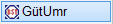")
")
Um Stäbe verschiedener Stahlsorten unterscheiden zu können oder Stäbe mit mechanischen Verbindungselementen erkennen zu können, ist es möglich, die unterschiedlichen Arten mit verschiedenen Positionsumrandungen zu versehen. Die Änderungen werden am Auszugstext vorgenommen!
In der Biegeliste, die ab ISBCAD 2022 zur Verfügung steht, werden diese Biegeformen nach Stahlgüte sortiert und automatisch gesondert ausgegeben. Die Positionsumrandung wird in der Biegeliste nicht dargestellt.
» Einstellungen Stahlliste (Biegeliste)
In den Stahllisteneinstellungen der alternativen Biegeliste können Sie angeben, ob in der Umrandung geänderte Positionen in der Stahlliste kenntlich gemacht und gesondert ausgegeben werden sollen.
» Grundwerte Biegeliste (Dialog)
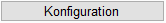
Grundeinstellungen für die Positionsumrandung ändern. Öffnet den Dialog Standard für Umrandung.
§Wählen Sie die Standardparameter für die Darstellung der Umrandung.
§Klicken Sie auf OK, um die Einstellungen zu übernehmen.
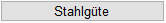
Stahlgüte einer Position ändern.
Wenn einzelne Bewehrungsstäbe in unterschiedlichen Stahlgüten eingebaut werden sollen, geben Sie die Bezeichnung hier an. Für jede Stahlgüte wird eine extra Stahlliste erzeugt.
§Klicken Sie den Auszugstext an. [Welcher Auszugstext].
§Klicken Sie einen der Einträge in der Dropdown-Liste an und bestätigen Sie mit Rechtsklick. [Stahlgüte].
Falls noch keine Liste vorhanden ist, geben Sie eine eigene Bezeichnung ein und bestätigen Sie mit der Eingabetaste. Sonderzeichen und Schrägstriche sind nicht erlaubt. Der Eintrag wird in Ihrem Anwenderprofil gespeichert.
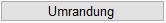
Einzelne Umrandung ändern.
Wenn Sie die Stahlgüte geändert haben oder Bewehrungsformen aus einem anderen Grund von den normalen Stabstahlpositionen (Kreis) unterscheiden möchten, stehen Ihnen zehn Symbole zur Verfügung. Wenn Sie das Symbol am Stahlauszug geändert haben, werden automatisch die Symbole an den Verlegungen angepasst.
§Klicken Sie den Auszugstext an. [Welcher Auszugstext].
§Klicken Sie das gewünschte Symbol in der Liste an. [Umrandungssymbol].
Symbol |
Bezeichnung |
||
|---|---|---|---|
Kreis |
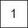 |
4l-Eck |
|
Oval |
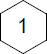 |
6s-Eck |
|
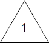 |
3l-Eck |
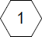 |
6l-Eck |
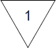 |
3s-Eck |
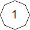 |
8s-Eck |
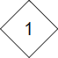 |
4s-Eck |
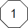 |
8l-Eck |
Das Symbol wird geändert.
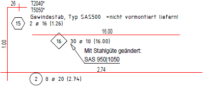 |
Siehe auch: